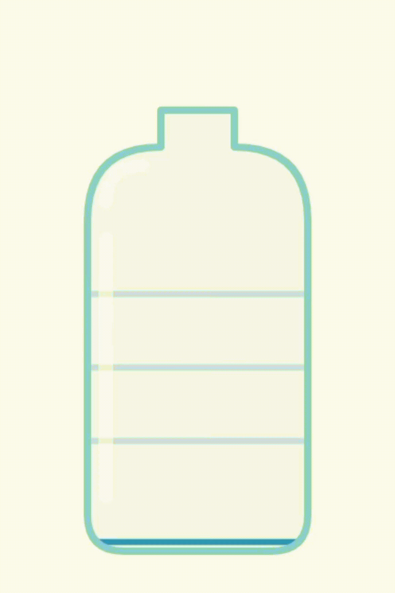

Kelola air kampus dari satu dashboard .
Platform real-time untuk memantau status galon, melaporkan kerusakan dispenser, dan memastikan distribusi air merata di seluruh gedung UC.

Semua yang kamu butuhkan dalam satu platform.
Dari pemantauan real-time hingga manajemen staff, CariGalon menjawab setiap kebutuhan logistik air kampus.
Status Dispenser Real-Time
Pantau kondisi setiap dispenser secara langsung. Data diperbarui otomatis sehingga kamu selalu tahu mana yang perlu diisi ulang.
Analitik Konsumsi Air
Visualisasi tren refill dan laporan per lantai membantu manajemen kampus membuat keputusan distribusi yang lebih tepat.
Laporan Cepat
Mahasiswa bisa langsung melaporkan dispenser rusak hanya dalam beberapa ketukan.
Manajemen Staff
Assign maintenance staff ke dispenser tertentu dengan mudah dan lacak statusnya.
Peta Lantai
Temukan dispenser terdekat menggunakan peta interaktif per gedung dan lantai.